Table of contents
1. FAQ & details
I. Meaning of the side indicator
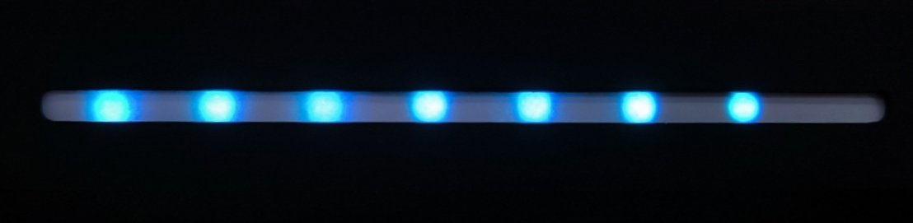
The side indicator indicates how good the air quality is using 8 LEDS. It starts from left to right. All 8 LEDS on means the air quality is super healthy, but if only 1 LED lights up, it means the air quality is hazardous.
II. Software & navigation
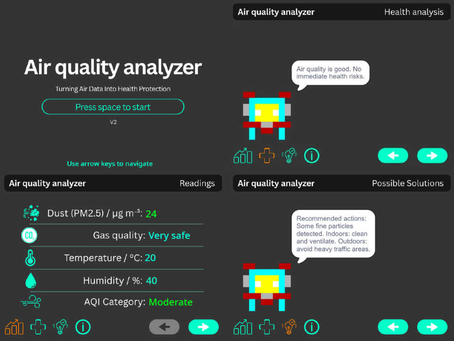
To navigate, you must first press the space button after running the software. Then to move to other pages, you use arrow keys to navigate. The software does not support mouse clicking.
III. How health issue is determined
Health risk, for a specific factor of air quality is a value from 0-1, calculated by substracting the sensors reading by the amount where health risk is 0, then divided by the number where health risk is significant enough to cause health issues.
Where H is the individual health risk and ranged from 0-1, x is the sensor reading, s is the reading value where air quality remains safe and m is the value sustracted by s where health risk is guranteed.
Example is the health risk formula for Temperature where T is the temperature, 25 is the temperature where air quality remains safe, and 10 is the value substracted by 25 where health risk is guranteed. Therefore, 25 degrees mean health risk is 0 and 35 (s + m, 25 + 10) mean health risk is 1 (maximum).
Every factor (temperature, humidity, gas quality and dust particles) are calculated through the formula above then weighted (0.2 for temperature and humidity, 0.3 for gas quality and air particles). to get the overall final health risk value (still ranged 0-1). The health issue is then provided based on the final health risk.
Above is how the overall health risk is determined. The next health risks are determined just based on the sensor readings. Example: Temperature > 32 can cause dehydration. The solutions are also determined just based on the sensor readings.
2. Components used & pricing
| Component | Description | Image | Price |
|---|---|---|---|
| Arduino uno | Main board | 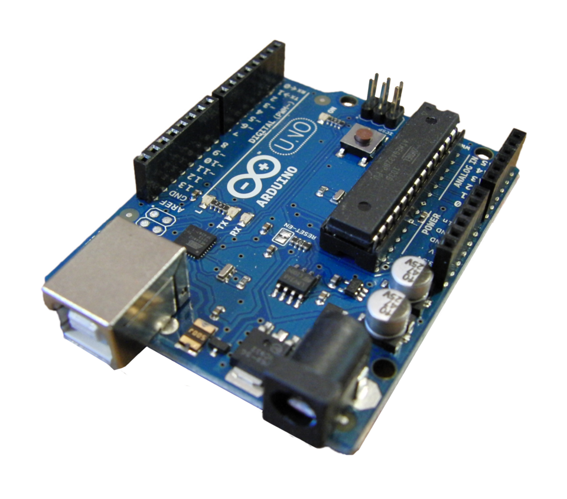 |
RP. 57,500 |
| MQ135 | Harmful gas detector | 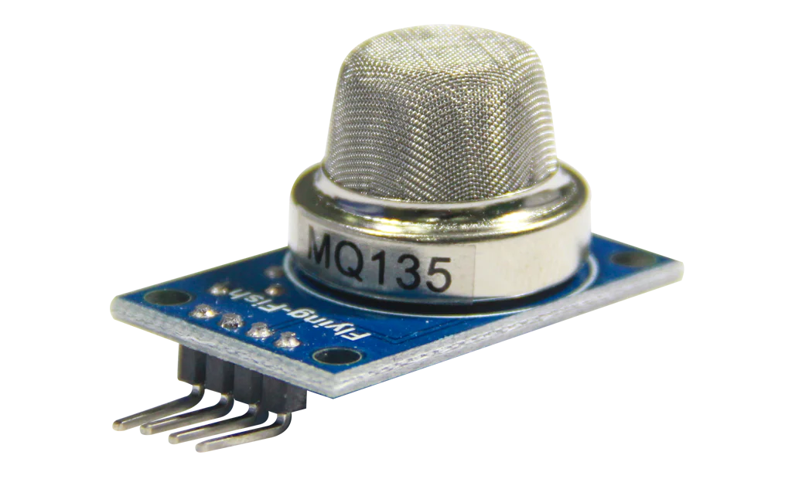 |
RP. 17,500 |
| DHT11 | Humidity and temperature sensor | 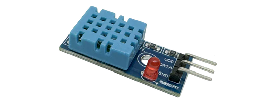 |
RP. 11,000 |
| gp2y1010au0f | Dust particle sensor (PM2.5) | 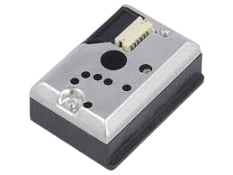 |
RP. 55,000 |
| 128*64 OLED display | Displays values | 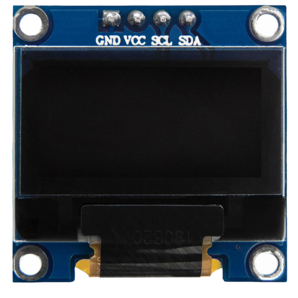 |
Rp. 28,400 |
| 3D printed case | Encases all components | 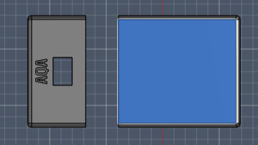 |
RP. 100,000 |
| Others | Such as cables, resistors, bluetooth module, etc | - | RP. 113,700 |
All the components used total up to RP. 383,100 without the price of delivery and tools used considered.
Note: Price my vary based on the shop you buy and/or the promotions or discounts available.
3. 3D case model
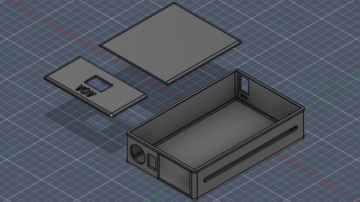
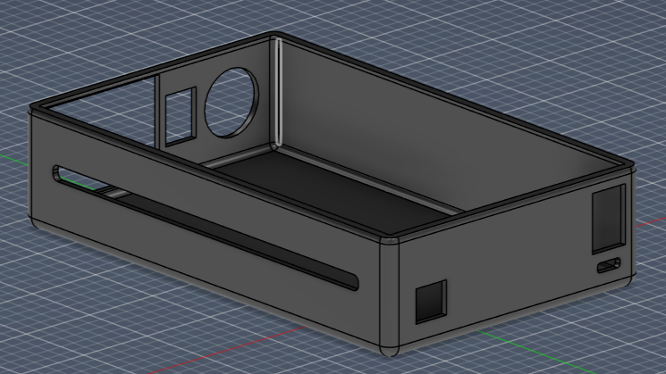
These are 3d renders of the AQA2's outer case designed with autodesk fusion 360 pro.
4. Development process/timeline
Beginnings
Around september of 2025 was when i heard of codeavour 7.0. I heard about the prizes and how interesting it was so i decided i would registered for it. I did wish i registered as a group with other people however, most of the people i knew werent really keen on joining, so i decided to join by myself.
I decided to choose the topic of clean planet, healthy people as i believe that having a clean planet with healthy people is currently the most important thing to have, as they are major factors determining the future of mankind.
Endless ideas
The topic of clean planet, healthy people is very broad, meaning there are a lot of options of what i could make.
The first thing that came to my mind when hearing "clean planet, healthy people" was to create a device that could pick up trash from the ocean, but after a lot of thinking, i didnt feel like it would make a very big impact, unless it was a very large scale project.
Another thing i thought of was to create a mask that filters out all air pollutants, possibly also monitoring the air quality (similar to AQA2), but i thought it would be too bulky and not really comfortable to use.
Finally, the idea of an air quality monitor came up to my mind. I thought of just creating a simple common one however, thats when i realised it wouldnt make that big of an impact as people may not be educated about what the monitor readings are.
So that is where i came up with the idea of adding a health issue predictor along with a solutions provider to ensure people know what the readings mean, and what actions to take to improve their air quality.
Hardware assembly
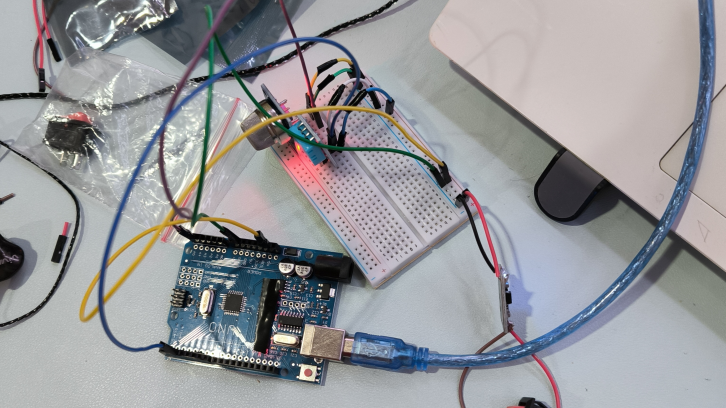
December 2025 was when i started to purchase the hardware for the project. The components i listed above in section 1 were the one i purchased, along with other things such as jumper cables, resistors, capacitors and much more to connect these components together.
It did take a while for the components to arrive but i recieved it around christmas 2025. That was when i got started working with the hardware. it took me about 2-3 days to complete connecting the components, working about 2-3 hours a day. I finished a lot faster than expected which gave me a huge advantage as i had time to create the software for it.
Software and UI
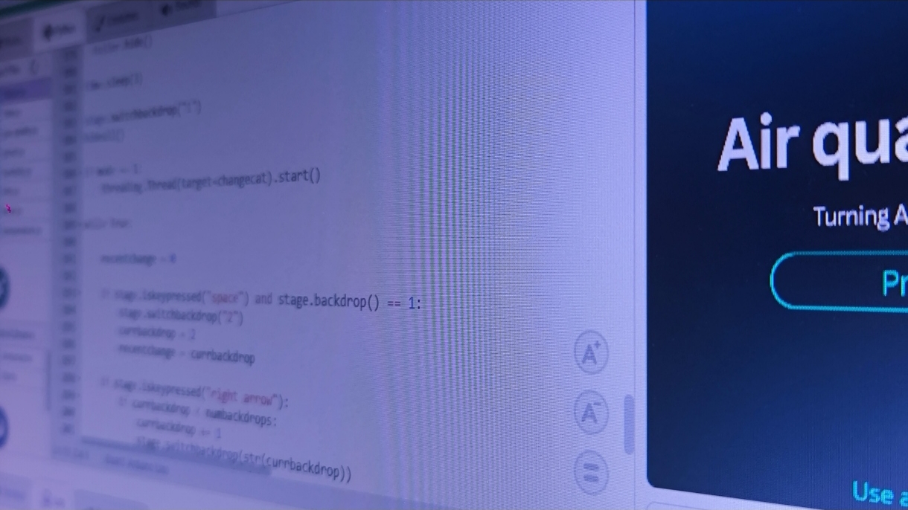
Early 2026 was when i got started with making my software. I decided to use python for pictobloxes code as it allows for more flexibility compared to blocks, and made it easier to perform somewhat complex calculations.
For the UI, i initially wanted to use pictobloxes deisgner but i found it too simple and too limited, so i decided to use canva instead to design my UI, as it allowed for more complex shapes along with better looking elements.
If i had to mention my biggest struggle, i would say that making the software was the hardest due to pictobloxes limits. I wanted to display text with a fancy font and color but i couldnt do that as i could only display text in a way which sprites talk, which i find to be a little silly. I dont know if i missed the option for displaying text but i did research and could not find anything.
Elimination round
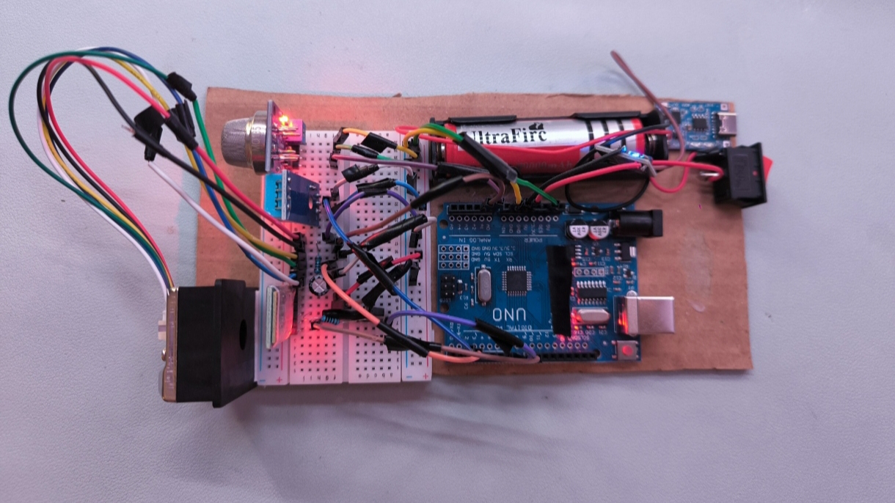
March 2026 was the submission deadline for the project. This was how my final device looks. Looking back at it, i found it to look really messy and cheap as every component was exposed, only using cardboard was its base. It was fragile and i feel like it would break super easily if i wasnt the one handling it.
Surprisingly though, i had passed the elimination round AND the regional round as well, likely due to my projects concept instead of design.
Fun fact: I added a simulation mode to the software meaning you can kind of use the software without even having the hardware. Ofcourse, the readings will just be random values but it allows people to get an image of how it would work if they owned the device.
The final upgrade
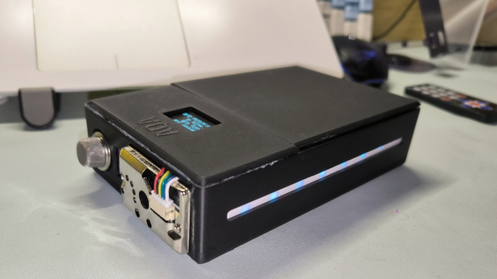
As i passed regionals, i had the opportunity to upgrade my project. I considered adding a display directly on the device so that you can measure air quality independant of the software (good for situations where you cannot bring your laptop).
Along with a display, i also added a led strip indicator to indicate how well the air quality is. I added this to improve accessibility as some people may not be able to read the tiny display due to visual impairments.
Furthermore, i decided to encase everything in a 3D printed case to significantly improve how it looks like and to ensure it is robust.
Lastly, i also upgraded the software by improving its health prediction system and also the solutions provider. I also ensure that values displayed in the software were more accurate.
This is the upgraded version of the project and it is now called AQA2, standing for air quality analyzer V2.